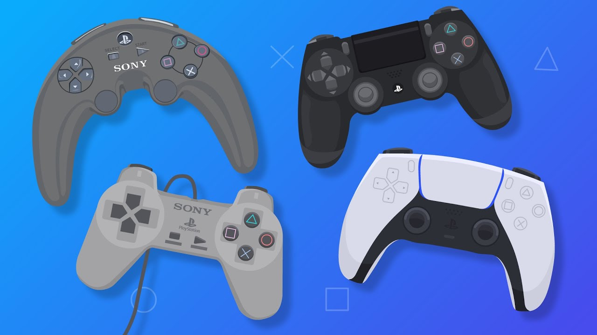

All Game Controllers Assemble Here
The Times They Are A-Changin'
Video games have two sources. One is art. Immanuel Kant once said that art and game are free, as they don't have specific purposes. The other one is computer. Games merge with computer technology in the digital age, thus leading to the birth of video games.
From the perspective of computer, video games can be seen as softwares or contents, and video game consoles as hardwares. Most researches are focused on video games and consoles, but the interface between humans and games are very often neglected. This discipline is called human-computer interaction, and the interface is human interface device, or input device and output device in the computer architecture. Output devices are basically monitors and speakers where humans are passively receiving information, while input devices are like game controllers, in which we can actively take control. Game controllers are good examples for human-computer interaction studies, and this research area is also getting more crucial, not to mention the market size of video games reaching 175.8 billion dollars in 2021.

As for players, controllers are indispensable and can greatly affect gaming experience. PC players might try something other than keyboard and mouse for certain game genres. Console players are eager to collect different limited versions of controllers. Retro players try hard to seek out legacy controllers in the flea market. Firmly holding a game controller at hand, gamers have a lot to say and many needs to meet.
Check out more about the project here.